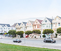
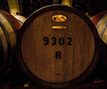
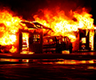

Services
Our motivated and professional security officers will not rest until your residence, facility or event is safe and secure. We are equipped to protect your most valuable people and assets. Here are some of the security services we provide.
- Residential 
- Commercial
- Government
- Wineries 
- Schools
- Events
- Cannabis Dispensaries
- Clinics & Hospitals
- Body Guards
- Fire Watch & Construction Sites 
A gated residential community provides a sense of security just by the fact that entry to it is controlled. But security doesn’t end with access limits. Residents want to know that their properties are being watched especially when they are not at home. Being familiar with a community, its residents and its unique personality, means a security service is better equipped to keep it safe and can respond quickly and more effectively when issues arise.
Services provided:
• Guard gate security and access screening
• Vehicle patrols
• Alarm response
• Safety and security checks
• Residential noise complaints
• Investigate suspicious activities
• Residential vacation patrol and monitoring
• Check and secure the pool and spa facilities after closing
• Parking enforcements

A commercial building is any type of building that generates income.
This can be an office building, industrial property, restaurant or
retail establishment, storage facility, medical building, hotel, or
even an apartment complex. Because buildings of these types generally
are used only during specific hours, they are often deserted during
off-hours and prone to unwanted activity.
American Veteran Security can provide regular patrols of commercial
buildings either on foot or in patrol vehicles. They will inspect the
interior and exterior of the buildings as requested during regular
business as well as off-business hours. They will screen persons
entering to make sure they are authorized to enter and will observe
persons exiting so no property is removed without permission. They
can also provide a security trained receptionist to direct customers
and others to the appropriate location. Because their guards are
trained to observe patterns of behavior, they are often able to
prevent theft or other ill-intentioned events from occurring.
Services provided:
• Regular patrols (interior and exterior)
• Entrance/exit screening
• Security trained receptionist

At American Veteran Security, we see it as a privilege to provide protective services to our Government clients. Agencies and administrations, at all levels of government, must operate in an increasingly complex environment where a growing number of threats demand urgent, appropriate response. Our security guards are equipped to secure the most important administrative and operational facilities and personnell.
Services provided:
• Entrance/exit screening
• Surveillance and officer presence
• Interior and exterior patrol
• Parking and parking structure patrols
• Parking enforcements
• Personnell escorts
Wine is central to much of life in Sonoma, Napa and Marin counties and winery events are becoming more and more a part of that. From one day to weekend events, from concerts and weddings to parties and fundraisers, each event has its particular needs for security and safety. By providing for the safety, security and protection of their guests, wineries will ensure that each event is an enjoyable experience for everyone who attends.
Services provided:
• Regular patrols (venue and parking)
• Loss prevention
• Personal protection details for VIP’s
• Crowd behavior monitoring and de-escalation of disruptive behavior
• Traffic and public transportation direction
• Venue shutdown and closing
Schools have a wide variety of security requirements depending on the type and size of the institution. College campuses, sporting events, party groups, political events, high schools, grade schools all have their own unique set of concerns. American Veteran Security will keep your students and staff safely guarded while on campus.
Services provided:
• Surveillance and officer presence
• Student behavior monitoring and de-escalation
• Access screening and bag check
• Interior and exterior patrol
• Parking enforcement
• Traffic and public transportation direction

Large events offer opportunity for the unexpected to happen and each kind of event draws a unique crowd. American Veteran Security personnel are trained in what to expect from different kinds of crowds and to be ready to handle whatever situation might arise with the presence of armed or unarmed guards. They will discuss any particular concerns you may have ahead of time and work with you to make your event safe and secure.
Services provided:
• Regular patrols (venue and parking)
• Personal protection details
• Access screening and bag check
• Crowd behavior monitoring and de-escalation
• Traffic and public transportation direction

With both Medical and Recreational Marijuana legalization sweeping the country, demand for security services within the cannabis industry has grown at an explosive rate. Our armed and unarmed guards will deter criminal activity, protect merchandise and secure your facilities all while making your patients, customers, employees and personnell feel safe and at ease.
Services provided:
• Surveillance and officer presence
• Access screening and I.D. check
• Staff escorts
By its nature, a healthcare facility needs to be a place where people can come and go freely, often at any hour of the day or night. Visitors may have their guard down, making themselves more vulnerable to theft or other unwanted behavior. The safety and security of staff is important so they can focus on their jobs, and patients recuperate and recover faster when they don’t worry about their safety. Whether the security is always visible or not, a healthcare facility cannot function well for long without it.
Services provided:
• Surveillance and officer presence
• Interior and exterior patrol
• Parking and parking structure patrols
• Parking enforcements
• Staff escorts
• Manage and de-escalate disruptive visitors
• Room security and inmate watch
From one day to permanent protection 24/7, American Veteran Security can
provide most any level of protection. From executives to rock stars,
to a private citizen with a problem, we have the solution.
Our bodyguards range from off duty police officers, ex-military,
martial arts experts, to simply the big guy or gal trained in take
down techniques. They can be armed or unarmed, plain clothed or
uniformed for a deterrent effect.
Types of Bodyguard services:
• Politicians and diplomats
• VIP and celebrities
• Businessmen
• Individuals
• Family protection
• Transport patronage
• On site & event protection
Construction sites are often unoccupied on weekends and evenings making
them vulnerable to vandalism and theft. Security cameras are helpful
but don’t replace a human presence. Millions of dollars of equipment,
materials and metals are set on fire, catch fire, or stolen from
construction sites each year.
American Veteran Security performs regular or random patrols of your
construction site preventing the loss of valuable items and keeping
an eye out for any vandalism or other malicious behavior.
Services provided:
• Watch for flames and the smell of smoke.
• Regular patrols (interior and exterior)
• Entrance/exit screening
• Loss prevention (tools, supplies, & equipment)